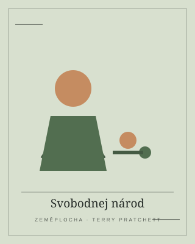
01 / TERRY PRATCHETT
Svobodnej národ
Tiffany Bolavá se ocitá v kraji, kde se staré pověry probouzejí a odvaha je důležitější než velikost.
Stáhnout ZIP ↓Příběhy, které se nemusí číst očima. Vyber si knihu, prohlédni si krátký popis a přejdi ke stažení.

Tiffany Bolavá se ocitá v kraji, kde se staré pověry probouzejí a odvaha je důležitější než velikost.
Stáhnout ZIP ↓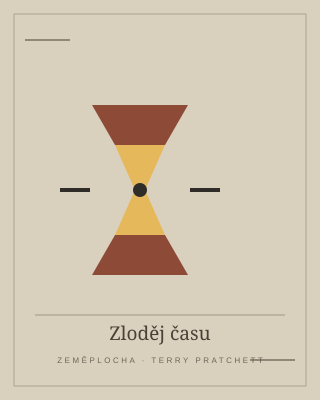
Někdo chce čas zastavit. Smrt, jeho vnučka a několik velmi nepravděpodobných spojenců tomu musí zabránit.
Stáhnout ZIP ↓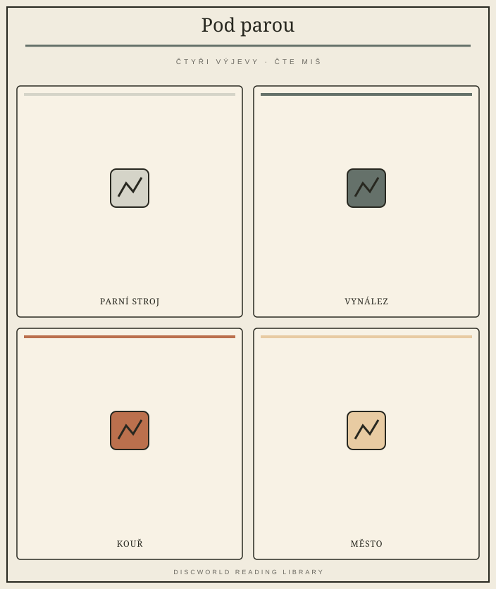
Na Zeměploše se objevuje železnice a s ní pokrok, který se řítí kupředu rychleji než kdokoli čekal.
Stáhnout ZIP ↓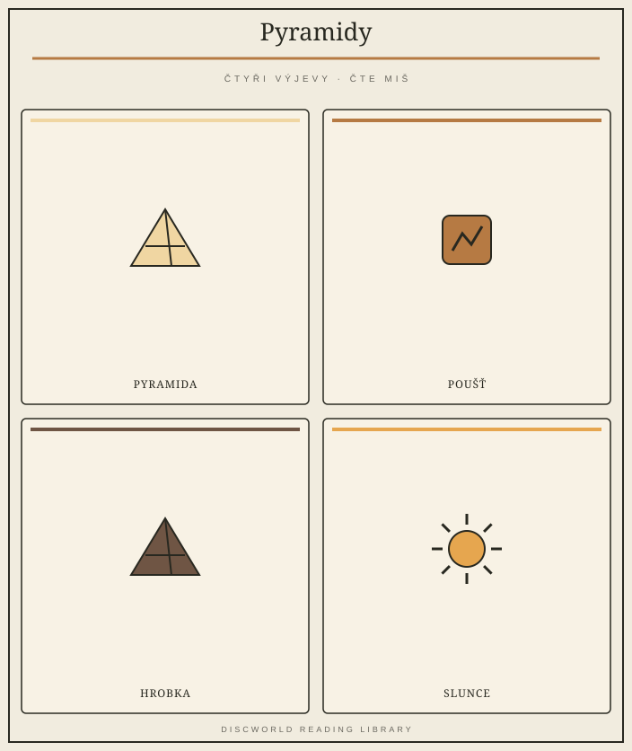
Mladý vrah se vrací do království, kde tradice drží svět pohromadě. Jenže někdy ho drží až příliš pevně.
Stáhnout ZIP ↓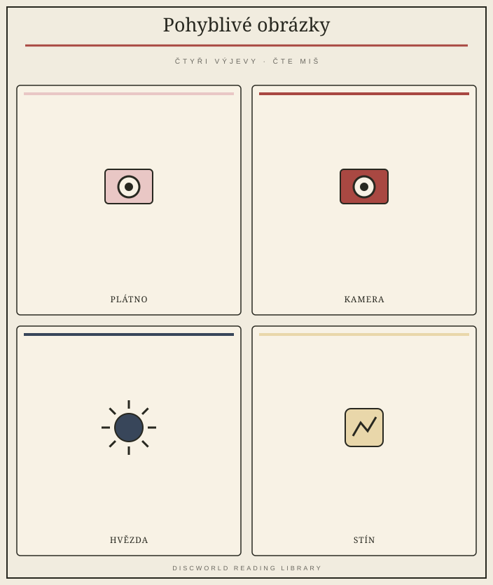
Holy Wood objeví kouzlo filmových snů. A sny, jak se ukáže, mají občas vlastní a dost nebezpečné plány.
Stáhnout ZIP ↓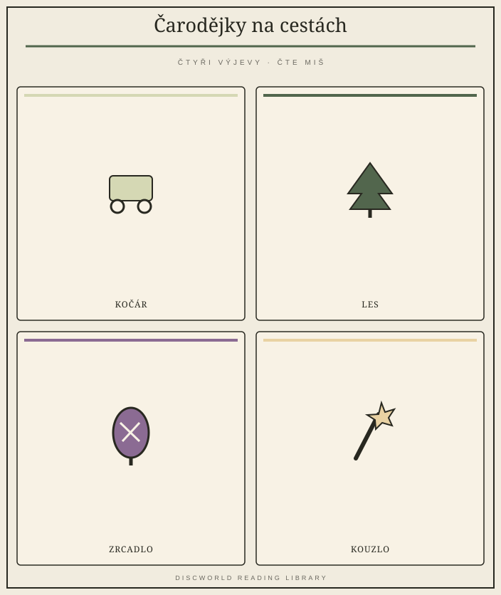
Tři čarodějky vyrazí do ciziny napravit pohádku, která se odmítá držet správného scénáře.
Stáhnout ZIP ↓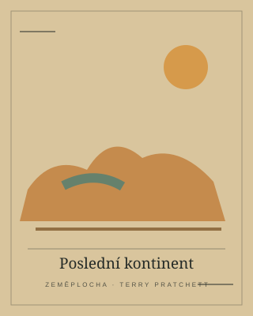
Rincewind se ocitne na kontinentu, kde je všechno trochu povědomé a skoro nic nefunguje podle pravidel.
Stáhnout ZIP ↓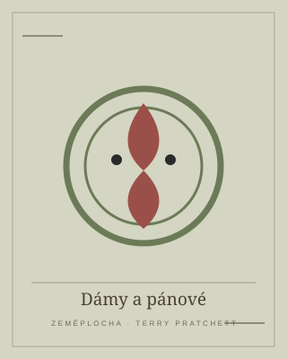
Za zdvořilou fasádou pohádkového světa čekají elfové, kteří nejsou ani trochu roztomilí.
Stáhnout ZIP ↓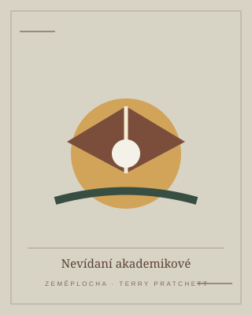
Neviditelná univerzita se pouští do fotbalu. Pravidla jsou nejasná, sázky vysoké a mágové zůstávají mágy.
Stáhnout ZIP ↓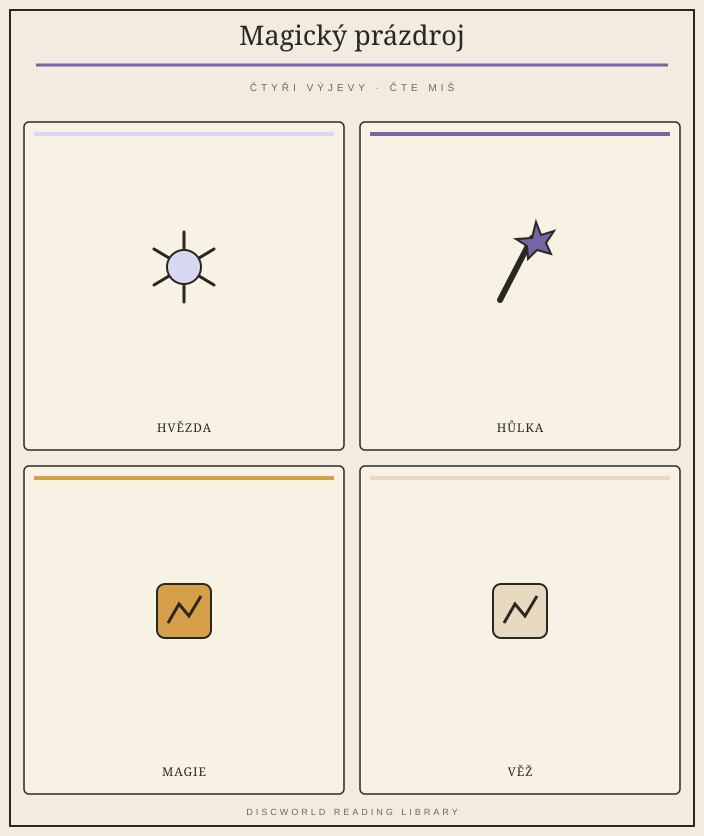
Když se zrodí osmý syn osmého syna, magie na Zeměploše se začne chovat velmi podivně.
Stáhnout ZIP ↓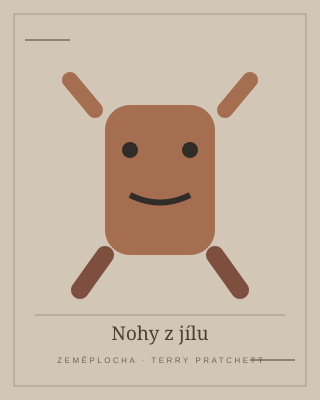
Ankh-Morporkem otřásají záhadné události a Městská hlídka zjišťuje, že i golemové mají svá tajemství.
Odkaz se připravuje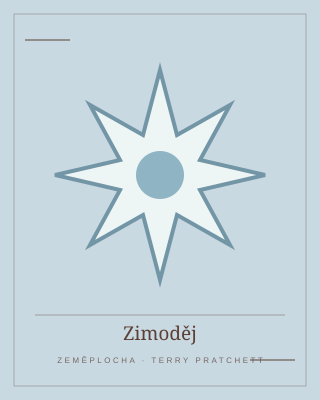
Tiffany Bolavá se připlete k tanci ročních dob a musí přesvědčit zimu, že není její nevěsta.
Odkaz se připravuje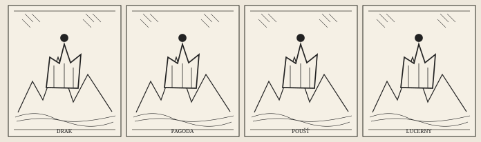
Rincewind je vyslán do vzdálené říše, kde se schyluje k revoluci a proroctví berou nebezpečně vážně.
Odkaz se připravuje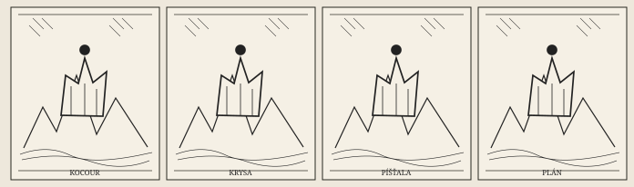
Mluvící krysy, chytrý kocour a kluk s píšťalou rozjedou podvod, který se jim brzy vymkne z tlapek.
Odkaz se připravuje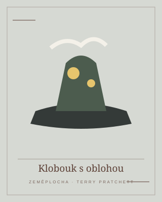
Tiffany se vydává mezi čarodějky a zjišťuje, že skutečná magie začíná pozorností a odpovědností.
Stáhnout ZIP ↓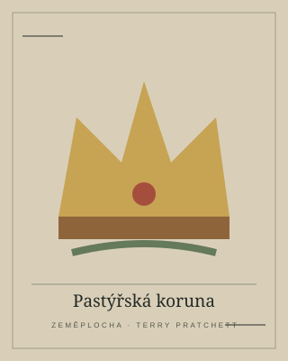
Tiffany čeká nejtěžší úkol: chránit svůj kraj i lidi v okamžiku, kdy se svět mění.
Odkaz se připravuje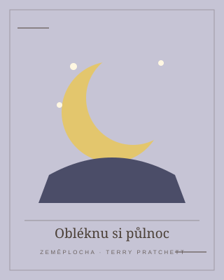
Tiffany se učí, že pomáhat lidem znamená vidět i to, co ostatní raději přehlížejí.
Odkaz se připravuje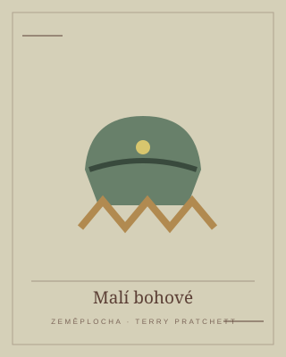
Bůh Om se probudí v těle želvy a zjistí, že víra, moc a instituce nejsou totéž.
Stáhnout ZIP ↓Na Zeměplochu dorazí hudba, která se hraje sama a má podivuhodnou schopnost ovládnout posluchače.
Stáhnout ZIP ↓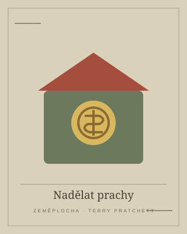
Podvodník Moist von Lipwig dostane na starost banku. Peníze, důvěra a podvody se ukážou jako příbuzné disciplíny.
Stáhnout ZIP ↓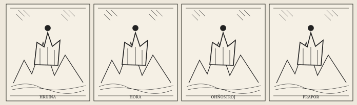
Staří hrdinové se vydávají na výpravu, která může přepsat pravidla světa. Bohové nejsou nadšení.
Odkaz se připravuje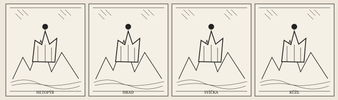
Do Lancre přijedou moderní upíři, kteří se domnívají, že stará pravidla už neplatí. Čarodějky mají jiný názor.
Odkaz se připravuje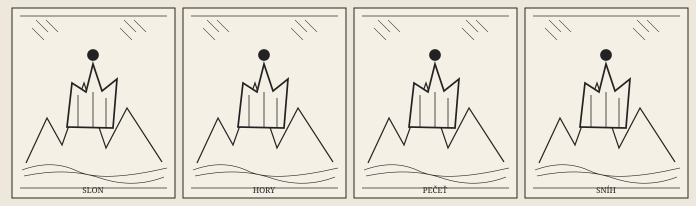
Sam Vimes míří do Überwaldu, kde se střetávají diplomacie, staré tradice a velmi nebezpečné zájmy.
Odkaz se připravuje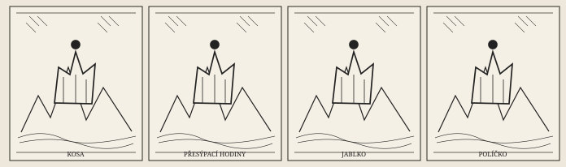
Smrt dostane dovolenou a život na Zeměploše se začne množit způsobem, který nikdo neplánoval.
Odkaz se připravuje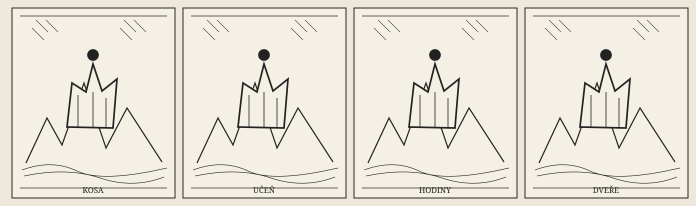
Mladík Mort se stane Smrťovým učněm a zjistí, že zasahovat do osudu má následky.
Odkaz se připravuje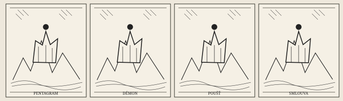
Rincewind se připlete k přání mladého čaroděje, který chce bohatství, moc a krásnou ženu. Démoni mají vlastní představu o splnění objednávky.
Odkaz se připravuje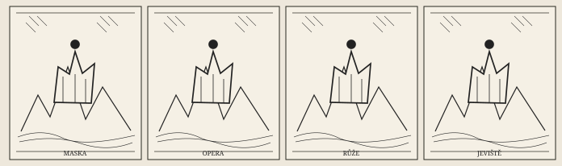
Bábi Zářivá a Stařenka Oggová proniknou do operního světa, kde se za kulisami skrývá víc než jen divadelní duch.
Odkaz se připravuje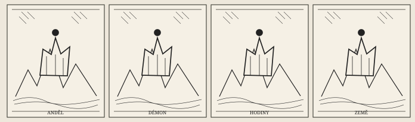
Anděl a démon se pokoušejí zabránit konci světa, protože si na Zemi až příliš zvykli.
Odkaz se připravuje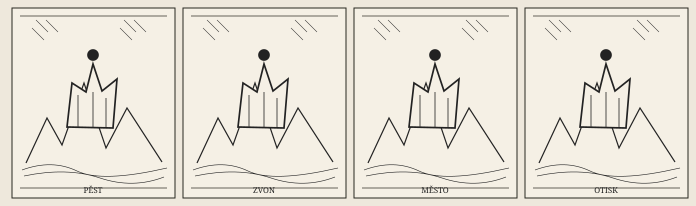
Městská hlídka vyšetřuje vraždu, která může rozdmýchat starý konflikt mezi trpaslíky a trolly.
Odkaz se připravuje